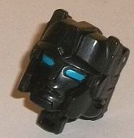
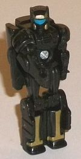
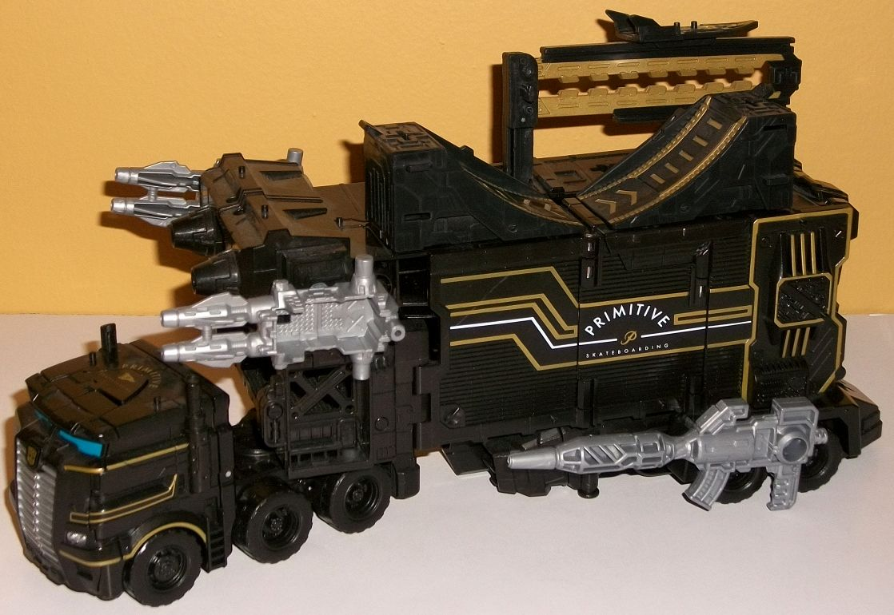
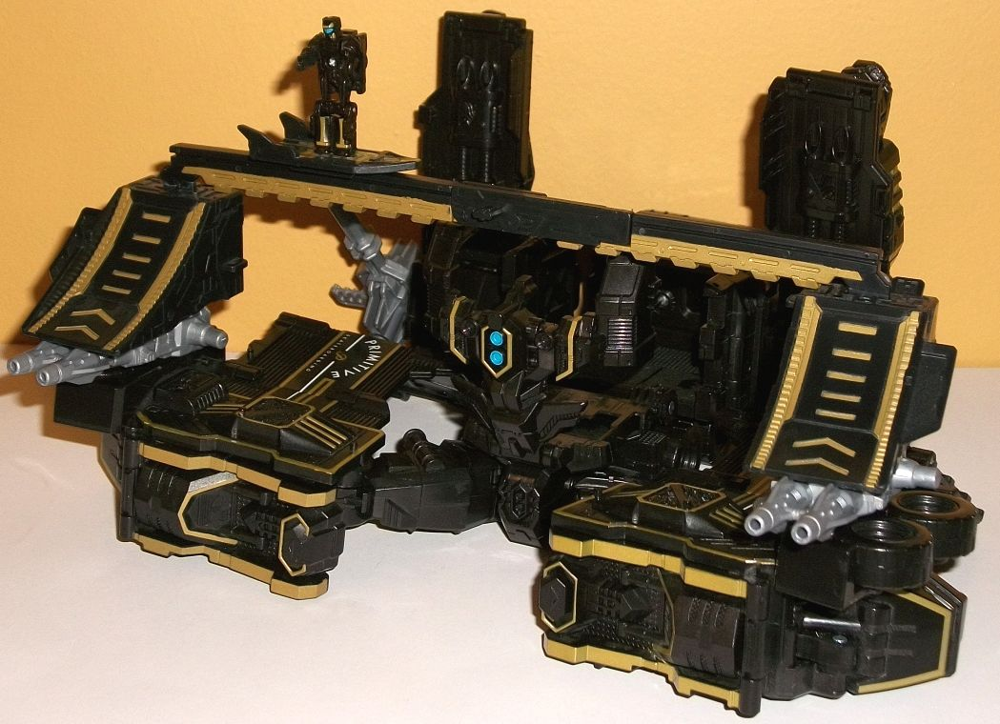
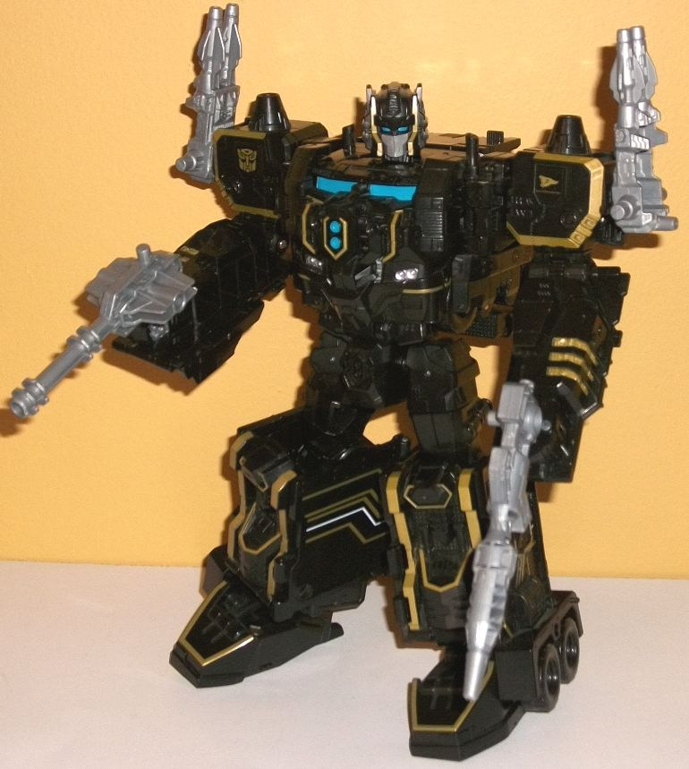

Price:
$50 (U.S.)
Size
: Leader
Difficulty of Transformation to Base
:
Medium
Difficulty of Transformation to Robot
:
Hard
Color Scheme
: Black and some moderately
light milky gray, dull metallic gold, white, silver, and moderately light
blue
Rating
: 8.3
(NOTE: Because this is a repaint, this is not a full-blown review. This mainly covers any changes made to the mold and the color scheme, and merely compares it to Titans Return Powermaster Optimus Prime w/ Apex. For a review on the mold itself, read the review of Titans Return Powermaster Optimus Prime w/ Apex here .)


Shreddicus Maximus is
Apex without any mold changes, but in MUCH better colors. All of his base
plastic is black, but he's got some nice paint apps in robot mode; some
gold trim on his legs and helmet, as well as a very nice shade of moderately
light blue on his visor. In head mode there's also the same blue shade
on his eyes-- which is a REALLY nice shade, by the way, and contrasts excellently
with the black to the point where I wish it was used much more-- but unfortunately
the paint is ONLY used on the eyes. Luckily, the head is mostly covered
up by the helmet for Optimus Prime's robot mode, so there's that...



Optimus Prime himself
is pretty much branded with Primitive Skateboarding trademarks on the side,
with what I assume are the usual Primitive Skateboarding colors (I can't
find much about them after a quick Internet search beyond this toy). Almost
ALL of Optimus Prime's plastic-- everywhere-- is black. The only exceptions
to this are his guns, which are a fairly light milky gray (though they're
not
quite
as light as the super-blah shade commonly used on other
TFs). What make Optimus Prime more eyecatching are the gold trim lines,
used quite a lot on his front cab; the sides of his helmet; diagonal lines
on the side of the trailer; pretty much all along every edge of the back
end/robot legs, which looks REALLY nifty; the shoulders; lines on the lower
arms; and on some details on the faux truck front/chest for robot mode.
There's also a stripe of white down the sides of his truck mode to fit
with his Primitive Skateboarding insignias, and some silver on the front
grill and headlights of his truck cab and on his helmet's faceplate. Finally,
there's some more of that lovely moderately light blue on the truck cab
windows, as well as little circles on the center of his robot chest. Again,
even more than the gold, this color looks GREAT against all the black,
and I wish was used more on the toy.
No mold changes have
been made to the core toy, but additional parts have been added to turn
Optimus Prime into a bit of a "skate park" for Shreddicus Maximus on the
top of his truck mode, across his base mode, or just connected to each
other by themselves off to the side. There's two ramps (which can be stacked
back-to-back or next to each other) and a long edged pipe-like extension
that can be folded in half. There's also a little hoverboard accessory
that can fit onto the bottom of Shreddicus Maximus' feet, and the accessory
can also slide onto the pipe-like extension. It's a pretty nifty little
set overall, and offers a lot more play value for a Titan Master than typically
comes with a Titans Return toy. To make it even MORE awesome, though, the
skateboard park parts can all combine to form a massive railgun for Optimus
Prime in robot mode. Granted, the size is a bit ridiculously large proportionally,
and the connections between the skate ramp halves are just a tad easy to
accidentally unplug, but this is still a really awesome addition to what's
already a great accessory. There's also the expected gold trim all along
these parts, from the sides and center bits on the ramps to the edged portion
of the "pipe" to the center of the hoverboard.
SDCC 2017 Primitive
Skateboarding Optimus w/ Shreddicus Maximus is certainly one of the most
unique Optimus offerings out there-- seriously, who would have thought
to make a skateboard-themed Optimus toy? If you're into both TFs and skateboarding,
this is obviously a must-have. However, even if you're not into the latter,
all the gold trim really looks quite good, and the cool skateboarding accessories/railgun
bits are basically free (given that it was released at a Leader class retail
price). I wish there was more blue and another base plastic color besides
black on the toy, but overall I think the color scheme is still better
than that on the original version of this mold, so-- mildly recommended.
Review by Beastbot